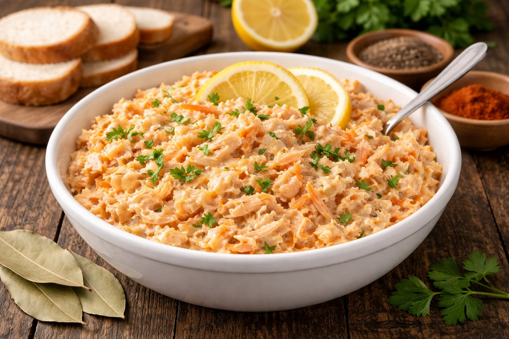

Suroviny
- 500 g kuracích pŕs
- 0,6 l vody
- 0,1 l octu
- 3 ks bobkového listu
- 10 ks čierneho korenia
- 1 čajová lyžička soli
- 1 ks mrkvy
Postup
- Všetky suroviny uvaríme približne 1,5 hodiny.
- Necháme odstáť aspoň 8 hodín.
- Mäso podrvíme na menšie kúsky.
- Pridáme nastrúhanú mrkvu, uhorky a cibuľu.
- Dochutíme horčicou, majonézou, soľou a korením.
- Premiešame a necháme ešte krátko odstáť.